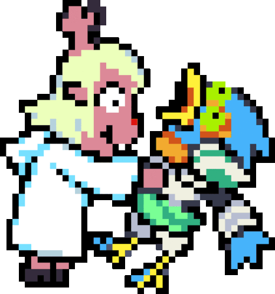
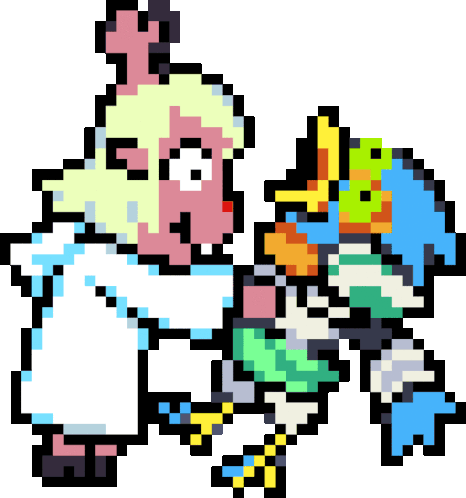
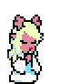
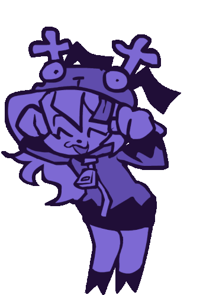

I Love Deltarune
It is my favorite video game and probably will be for a very very long time.
Keep in mind as of right now, this is a rambly mess and me just talking about whatever, I will definitely go back and clean this up later lol.
Last Updated 7/23/2025
 ㅤㅤ
ㅤㅤ  ㅤㅤ 
ㅤㅤ What is it?
Deltarune, released in 2018 and created by Toby Fox, you play as Kris, a human who you are bound to save the world along with characters named Susie, a fellow classmate and Monster, and a Dark Prince named Ralsei. The basic and starting goal is to seal Dark Fountains, which give life to things and create entire worlds in rooms which fountains are made, these fountains are prophesied to end the world if there is too many. Along your journey, you can spare, recruit, and befriend the enemies you meet, or you can attack and make them run away, but not all fights can be won by being nice. You'll learn about Kris, learn about people and the lives that are fulfilled in the dark, see worlds made from seemingly nothing, The Roaring Knight, whose goal is to create fountains, learn about the prophecy, and maybe even change it.
This game is a turn based RPG and is a follow up to Toby Fox's other game "Undertale", which this game improves on concepts introduced in that game. Fun Fact, this game is based on a dream Toby had all the way back in 2012, and Toby Fox originally wanted Undertale to be this story but decided to wait and basically Undertale became a testing ground of sorts and wanted to learn more before telling this massive story he has had planned for over a decade now.
What is it about this game that I love so much?

The first and obvious thing is that this game is a perfect evolution of Undertale's concept of "Not everyone needs to die", and also this game has a way better take of "The Genocide Route", which we'll get into later. Each Dark World is so unique for each other and they all have characters that I find to be fun, my particular favorite right now is Chapter 2 which takes place in a Cyber World, which is a dark world of the library computer room. Each Dark World also has their own secret bosses, soundtracks, and other things completely separate from each world so each one does feel truly different. All of the main characters in this game are so easy to get along with and love, I have favorites that I have dedicated my own section too which I will talk about later, but all of them have their own lore in and outside of the game that builds upon them all which is fun to figure out with the community. This game expands upon Gaster which in Undertale was a mystery and we didn't really know what he did or truly know what he was trying to do. Along with the other Undertale parallels, the "Genocide Route" of this game has something called The Snowgrave Route, also known as The Weird Route, where instead of you murdering monsters like in Undertale, you manipulate your childhood best friend, and also you emotionally and mentally hurting Kris' friends, which to me is way more interesting and impactful than Undertale. This game is also just fun to play, the combat is easy to understand but it doesn't stop itself from being difficult, cause there are for sure some bosses that'll kick your ass. Something that I like to imagine is this game is a fun SNES style RPG that also stays faithful to that idea, even if Toby isn't really going for that at all.
My favorite character!
Each character in this game is uniquely great on their own, but say I had to pick 3, then I would say Noelle Holiday, Spamton, and Susie in that order.
I want to talk about Noelle, my favorite of the three, she is a reindeer with a geeky personality. You meet her briefly in Chapter 1 when you ask to join her group for the assigned group project since all of the others are in groups, but you're cut off to go with Susie to find chalk in the closet, which also turned out to be a Dark World! Wow what a surprise! But at the end of Chapter 1 you can find her at her house gate in Home Town and chat with her some more, you learn that she is extremely optimistic, timid, and scared about a lot of things. During this conversation, you learn that Noelle has a thing for Susie, but isn't exactly saying it either (yet). In Chapter 2, she takes a lot of the spotlight with the Cyber World being a reflection of not only the Library Computer Room, but Noelle and Berdly's life, since they were in the room. You learn more about Noelle's life and personality, one of the main themes of Noelle's self discovery journey in that chapter is that she needs to be more self reliant and take initiative for herself, which she has a issue with. More things in this Chapter going along the main story is that her and Kris are childhood best friends, and also being neighbors, something Kris used to do a lot of is pranking Noelle. One of her fears when she was younger, explained by her dad Rudy was that she was terrified of humans under the bed, Kris knew this and would constantly scare her by hiding under her bed and jumping out. More things about the 2 is that Noelle seems to be more confident around Kris, talking and doing things with them that she doesn't seem to do with anyone else. She also has a sister named Dess, but we don't know a whole lot about Dess, its theorized that she is missing and may even be The Roaring Knight (I definitely believe so but it is up for debate). There is a moment in the game where the gang gets caught by Queen in Chapter 2 and Noelle gets sent back to her room that Queen specifically built for her, after the main gang gets out of their containment, they go and try to find her. They eventually find her room, Kris and Ralsei decide to stay behind and let Susie go in there and find her. During this time, there's a moment with Susie and Noelle where they get to connect and chat, then as they are leaving, they ride a Ferris Wheel together and talk some more, you get to see Susie and Noelle get more comfortable with each other and let loose. But during this time Susie convinces Noelle that the Dark World is a dream to try to keep it all a secret and keep her and the others safe (This is more relevant in later chapters). The end of Chapter 2 has the gang fighting GIGA QUEEN, and you eventually lose, and Queen tries to force Noelle to be her peon and expand the darkness, but Noelle finally stands up for herself and defends the others, she exclaims that she isn't happy being in this world doing what Queen is trying to make her do, which not only changes Queen a little bit, but also made Noelle do something that she has never done and stand up for herself a little more. There's so much more about Noelle, I mainly covered the story parts, but there are other secrets and dialog that you can find that will tell you more about her and the type of person she is. Noelle is my favorite character because I think she is really sweet and some of her personality traits I like and can relate too.
I want to talk about my other 2 favorites but I am gonna save that for another time, summerize the Noelle section a little more and give room for the others to have a spotlight.
I may love it, but what are my critiques?
While I love this game, I think there's some things that should be noted or that should get changed/updated in the future. My first note is that this game has been in development since 2016, its very clear in the design and structure in the chapters of the game, I am mainly talking about Chapter 1. In my opinion, that chapter is very uninteresting in the grand scheme of things, while some of the characters are fun, the overall Dark World feels like repeating rooms and patterns that I feel like will turn away a lot of new players, or players that aren't familiar with Toby's work. I am hoping that they go back and redo a lot of Chapter 1 to match the new quality and standards of modern chapters. I have more thoughts but I want to write them better before discussing them in the future, but them redoing Chapter 1 is something I am really hope happens before the game is fully completed because that will not leave a good impression.
The Amazing Community
This game has a absolutely creative and talented community, the artists, animators, writers, and content creators are all so amazing. The art that this community has made brings a lot of life to the characters and can even give you new perspectives to view these characters in a way that even Toby Fox acknowledges, to such a point that he retconned Noelles personality to fit the geeky and internet rotted deer that the community made Noelle to be.
The writing for some of the missing pieces of the lore or just some expansion of already established characters that the community has made are something to really appriciate, Spamton and Noelle's characters being big examples, and characters that dont get as much time on screen, like Jevil, Cattie, and Queen are expanded that only make you love them more.
Going back to the first point, the animations and art made by this community paints a whole new perspective on what things are like for these characters that are so interesting from a lore perspective and a "peoples interpretation" perspective. There is a video about a dream Noelle had and its Gaster talking to her about Dess and how she doesnt remember her face, its so good, here is the link for that video. The video may not be based on anything Noelle actually said in the game but its something that could totally fit the narrative of the game. I encourage anyone to look on Twitter and see the amazing things people have made for these characters and this game. The content made by people is enough to feed you for the time you have to wait for the game to be finished with development, and then some.
Art from the community that I love!
Clicking on a image will take you directly to the post that I got it from!